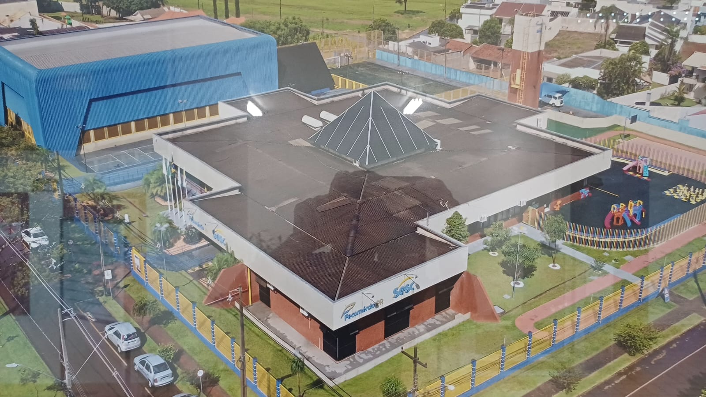
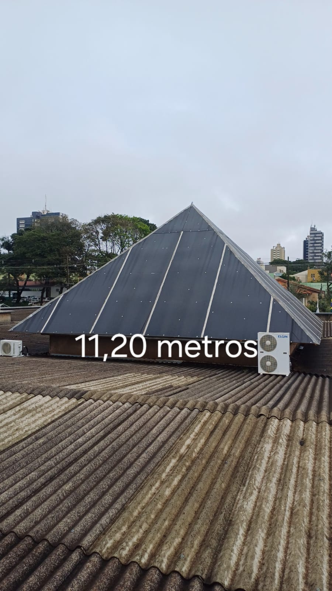
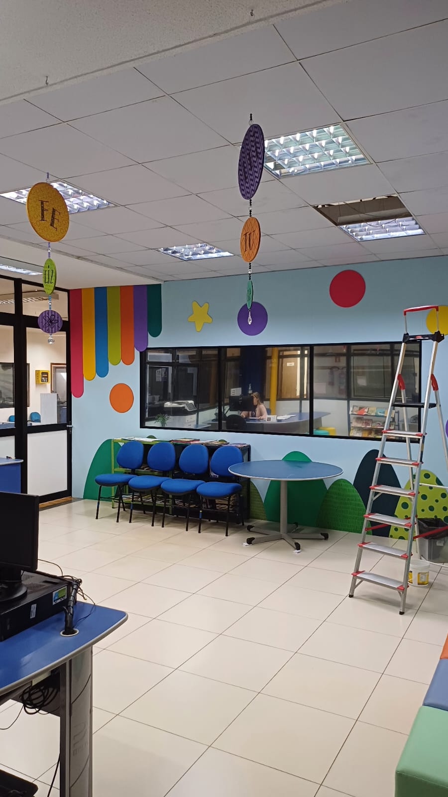
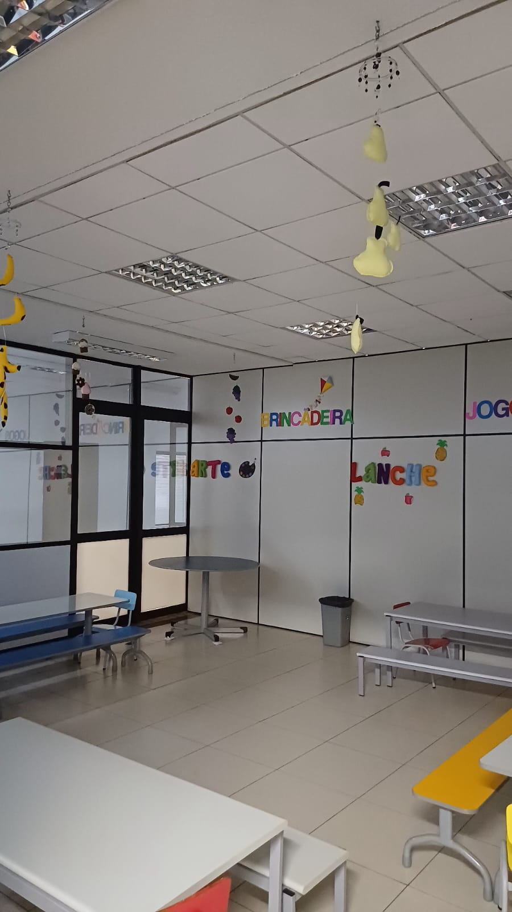
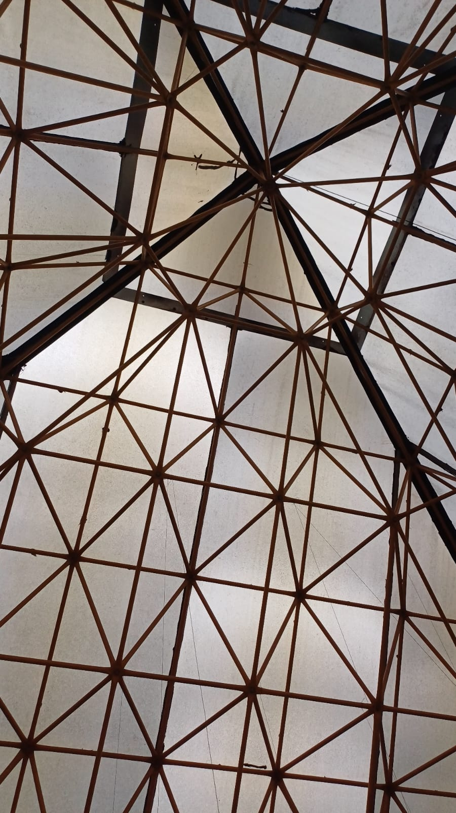
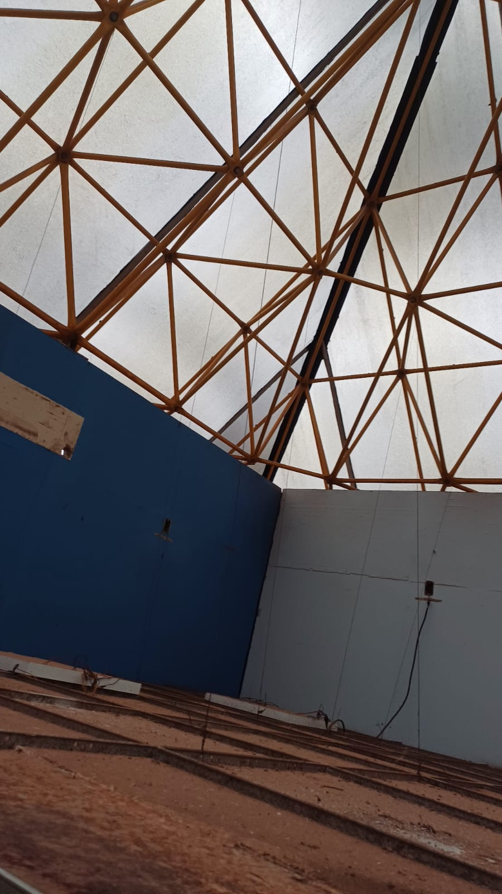

Orientação : Conserto Emergencial Estrutural – Cobertura “Pirâmide de Policarbonato”
Prezados,
Em complementação ao comunicado anterior, apresentamos, com mais detalhes, a situação crítica relacionada à
cobertura da unidade, especificamente à estrutura conhecida como “pirâmide de policarbonato”, localizada no setor
central da edificação.
1. Descrição da Estrutura e Histórico
A cobertura em questão foi instalada há aproximadamente 30 anos e compõe parte fundamental da iluminação e
ventilação natural do prédio. Trata-se de uma estrutura metálica leve recoberta por placas de policarbonato
translúcido, fixadas com suportes e perfis de metal.

Imagem aérea da pirâmide de policarbonato – estrutura central do prédio.

Imagem aérea da pirâmide de policarbonato – estrutura central do prédio.
2. Problemas Identificados
- Trincas e fissuras em diversas placas de policarbonato;
- Infiltrações generalizadas durante períodos de chuva intensa;
- Corrosão avançada em elementos metálicos de sustentação;
- Deslocamento de fixadores e perfis de junção.

Área interna afetada por infiltração no teto – deterioração visível.
3. Motivações para Orientação - Conserto Emergencial
- Risco à segurança de usuários e colaboradores.
- Danos patrimoniais recorrentes (curto-circuitos, equipamentos, acabamentos).
- Recorrência de manutenções corretivas com alto custo.
- Desvalorização da imagem institucional.

Área interna afetada por infiltração no teto – deterioração visível.
4. Evidências
- Relatórios fotográficos de inspeções (17/12/2020).
- Registros de RCMS 12603/2022(atendido).
- Relatórios fotográficos de inspeções (06/06/2025).
- Avaliação técnica por empresa orçamentária (25/06/2025)relata que o espaçamento de metal é inadequado para
atender
as normas técnicas referente ao policarbonato existente no mercado.

Área interna afetada cobertura policarbonato – deterioração visível.
5. Histórico de Levantamentos?
- Sim, a situação já havia sido relatada anteriormente em 17/12/2020 email corporativo (envolvidos
Thiana/Marcos/Adauto).
- Registros de RCMS 12603/2022(atendido).
- RCMS 23196/2023(atendido).
- RCMS 663/2024(atendido).
- RCMS 12379/2025(atendido).
- RCMS 11565/2025(em andamento).
Consta no planejamento de infraestrutura da Unidade?
- Providencia planejamento 2025/2026.

Área interna cobertura policarbonato – deterioração visível.
Encaminhamentos sugeridos
- Realização de laudo técnico estrutural atualizado.
- Avaliação orçamentária para substituição total da cobertura.
- Consideração de materiais mais duráveis (ex: telhas termoacústicas, vidro laminado temperado).
Permanecemos à disposição para fornecer mais documentos, imagens ou relatórios técnicos, conforme necessário.
Atenciosamente,
Thiana Jo Anne Costa
Gerente
Fone 44 3599 2559